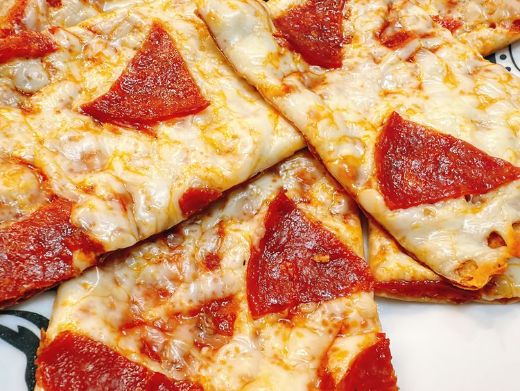

Lavash Pizza

Lavash Pizza
Lavash pizza is a quick and easy appetizer. Top lavash flat bread with pizza sauce, mozzarella, and pepperoni for the perfect thin-crust pizza. It's easy to customize—you can add any topping you like.
Ingredients
- 1 package lavash flatbread
- 1/2 cup pizza sauce
- 8 ounces mozzarella cheese, shredded
- 2 ounces pepperoni, or as needed
Directions
- Preheat the oven to 350 degrees F (180 degrees C). Spray one side of lavash with nonstick spray.
- Bake lavash directly on the rack in the preheated oven for 2 minutes.
- Carefully remove lavash from oven; place on a baking tray. Spread 2 to 3 tablespoons pizza sauce on each lavash.
- Sprinkle 2 ounces shredded mozzarella cheese on each lavash. Top with pepperoni.
- Bake pizza until cheese is melted and golden, about 15 minutes.